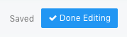

Currently when in dashboard edit mode, there are “Apply Changes” and “Cancel” buttons which are inconsistent (only apply to resize and drag - not to added / deleted widgets) and buggy (there is a scenario causing widget overlap).
The Proposition
Ditch cancellability and embrace auto-save, ala-Google Docs.
One button to switch off edit mode, next to it a save status indicator.

How it works
Each layout change marks a dirty state “Saved*” and triggers a server save to each changed widgets, debounced by 1 second, then the asterisk disappears.
Any error saving yields a notification and dirty indication persists.
Different variation experiments:
A longer debounce delay and a manual “Save” button - saving manually is simply unnecessary and doesn’t need to be on the mind of those editing the dashboard.
Three indicator states “Save*”, “Saving”, “Saved” - the “Saving” state is too quick and the text is jumpy.
Spinner when saving - calls needless attention.
The version implemented eventually is the least distracting and simplest.
I didn’t consider that cause without a save button, the user must have a clear indication that the current state has been saved, and temporary won’t do - the indication is designed to be non-distracting when editing but informative when done.
(For instance, in save-as-you-type forms that have no apply/save buttons, I’m never really sure it’s synced to server and find myself refreshing just to make sure…)
I’m good with the direction. I have some reservations about the implementation, because I feel that the “* Saved” variant isn’t clear enough (not visually appealing :)).
Maybe “Saving…” while it’s in unsaved state and “Saved.” when it’s saved?
The saving http request itself won’t take longer though.
it seems like they keep the “Saving…” text for a few seconds
Perhaps delaying it on purpose for the same reason. But why would you even want the user to notice it? All that matters is that when the user glances at the save indication - they know it’s saved.
I don’t mind the user noticing it as much as something about the “Saved *” bugs my OCD
Unless we add a delay to it to make sure multiple actions get only a single save. Also sometimes a single action can cause multiple widgets to update -> multiple HTTP requests that might take some time to finish.